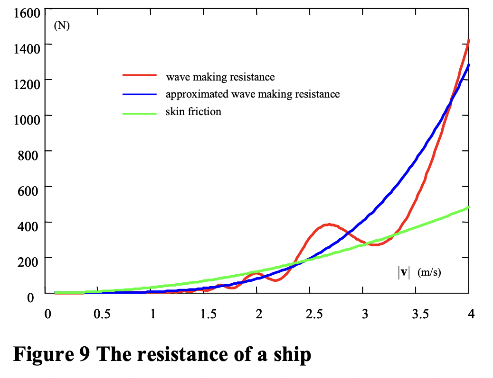
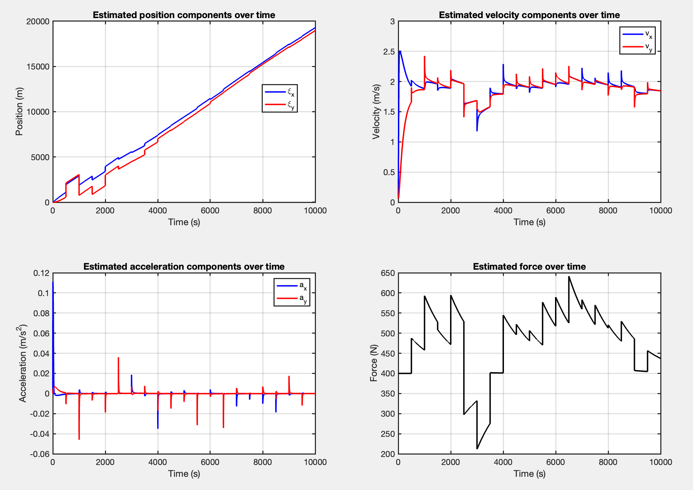
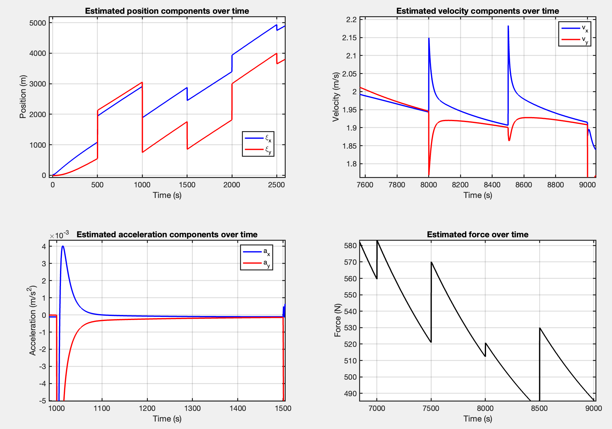

This is exercise 6/8 from my optimal estimation course.
The application revolves around Dead reckoning and bearing measurements, so a ship again.
To recall previous exercises, in Fundamentals of parameter estimation - Part III, we applied the unbiased linear MMSE estimation to update the position of a ship using a line-of-sight measurement knowing the position of an observed beacon. In Prediction in a linear dynamic system we have learnt how to predict the position, velocity, and acceleration of a ship. In Discrete Kalman Filtering for Radar Tracking Applications, we combined the two techniques.
In this exercise, we do it again, but the system equation and the measurement function will not be linearized beforehand, but during tracking.
Context
The motion of a ship is a balance between forces and moments. The defining equation is:
- is a 6-dimensional vector which contains linear velocity and the angular velocity (turning rates).
- is the 3-dimensional position vector.
For this application, we are going to ignore:
- orientation and rotations of the ship
- the variations in altitude (heaving)
- a number of external forces
This results into becoming 2-dimensional containing only the and directions ⇒ .
The forces due to weight and buoyancy (Archimedes) merely effect the altitude of the ship. So, the term is ruled out too.
It leaves us with the following model:
- is the mass of the ship
- represent the resistance
- is the net external force
- is the damping factor
- Skin friction contributes to this factor (especially for low speeds) -
- Wave making resistance also contributes (at higher speeds) -
- and are parameters that depend on the size and shape of the ship’s hull.
Therefore, we can model the damping factor according to the following approximation. In reality, more physical aspects contribute to it, we simply selected the two most notable ones.
The Figure below shows the resistance of a ship.

The external force will be assumed as a first order differential equation:
- is the mean thrust (magnitude) caused by the wind.
- is a physical constant that characterizes the slowness of these fluctuations.
The external force is also characterized by a heading which we also assume as a first order diff. eq:
- is a time constant that describes how fast deviations of the heading are corrected.
Time discrete system model
If the sampling period is , then the time derivatives are roughly approximated as:
Which makes for the following equations that model our process:
\begin{aligned}
\xi(i+1) &= \xi(i) + \Delta \mathbf{v}(i) + \mathbf{w}{\xi}(i) \ \mathbf{v}(i+1) &= \mathbf{v}(i) + \Delta \mathbf{a}(i) + \mathbf{w}{\mathbf{v}}(i) \ \mathbf{a}(i+1) &= \frac{1}{m} \left( t(i) \begin{bmatrix} \cos(\phi(i)\pi / 180) \ \sin(\phi(i)\pi / 180) \end{bmatrix} - d(\mathbf{v}(i))\mathbf{v}(i) \right) + \mathbf{w}{\mathbf{a}}(i) \ t(i+1) &= t(i) - \Delta \alpha_t (t(i) - t_0) + w_t(i) \ \phi(i+1) &= \phi(i) - \Delta \alpha{\phi} (\phi(i) - \phi_0) + w_{\phi}(i) \end{aligned}
is the process noise of the heading of the ship. Its variance is . is the process noise of the thrust. Its variance is . The 2-dimensional vectors , , and are also process noise terms. They account for small unpredictable errors in the modelled position, velocity, and acceleration. These small errors might be caused by the approximation of the time derivatives by the time differences. These errors are assumed to be uncorrelated. Their standard deviations are , and .
As a summary of the system model
The state vector is 8-dimensional and contains the position , the velocity , the acceleration , all 2-dimensional and the 1-dimensional thrust and heading . We can write it under the following equation:
The measurement model
Measurement are done with a sampling period of 500 seconds and are denoted by .
The ship is provided with three different types of sensors
- A beacon-based measurement
- A log which measures the speed of the ship
- A compass that measures the heading direction of the ship
The measurement function is given by:
\begin{bmatrix} \frac{180^\circ}{\pi} \arctan \left( \frac{y_0 - \xi_y(i_m)}{x_0 - \xi_x(i_m)} \right) \ |\mathbf{v}(i_m)| \ \frac{180^\circ}{\pi} \arctan \left( \frac{v_y(i_m)}{v_x(i_m)} \right) \end{bmatrix} + \begin{bmatrix} n_1(i_m) \ n_2(i_m) \ n_3(i_m) \end{bmatrix}
* $n(i_m)$ represents the measurement noise * The three error sources are not correlated
Questions
**1. Declare the covariance matrix of the process noise () and the covariance matrix of the measurement noise ().
This one should be easy, since the noise is uncorrelated in both cases. Just use the diag function in MATLAB and remember that position, velocity, and acceleration are 2-dimensional.
**2. Implement the EKF for this problem using the provided functions and dataset. Run until .
The implementation keeps the same structure as in Discrete Kalman Filtering for Radar Tracking Applications, but this time linearizing the non-linear system and measurement functions around the current state estimate with the help of the helper functions
fsysreplacesF*xhmeasreplacesH*x- and the Jacobians replace the fixed F and H in the covariance equations.
The algorithm is according to equations 4.45, 4.46, 4.47, 4.48 in the book.
cover more theory on this part.
3. Create graphs of the estimated states (position, velocity, acceleration, and force versus time).
The code is similar to that from the prior exercise.

As for the results, they were more or less expected to look this way. One common characteristics they share is the saw-tooth pattern. Since the model predicts continuously and only gets updates every 500 iterations, the sudden spikes happen at those exact updates. During those 500 seconds without an update, the estimated state slowly drifts off course in a near-linear manner. When an update does come in, the EKF tries to correct the states aggressively, causing the vertical snaps in all four areas.

To develop on my previous point where I stated that during the 500 seconds when there is no update, the states behave in a near-linear manner, we can take a closer look. The prediction step is completely deterministic and only adds random noise if I pass a third argument to fsys.m. Since I did not pass that third argument, the state prediction is purely deterministic (mathematically, process noise is used to grow the uncertainty matrix , not to randomize the state vector).
However, the nature of the process helps in this ‘linear’ trend. The state prediction is simulating the yacht moving under constant control input with steady water resistance. Since the mass of the yacht is high (3600kg) and the drag changes slowly, the resulting acceleration and velocity curves are extremely smooth. And since the position is the integral of a nearly constant velocity, it naturally forms a straight line in that gap of 500 seconds.
One question that popped up in my head was “How does acceleration tend to 0 if the velocity is not constant?”. In fsys.m, the drag equation suggests that resistance increases as the yacht’s speed increases. In an attempt to explain this phenomenon, I assume that at one point it reaches equilibrium and so the net physical force should drop to 0. Since acceleration is directly proportional to net force (), it should also drop to 0.
4. Create also a graph of the estimated path. Add, for some moments of time, uncertainty regions to this graph.

Again, the code is 1:1 to the one from the prior exercise. I chose to plot the uncertainty region every 500 iterations, which is the same as the update steps. I tried plotting on more occasions, but the insights remain the same.
In hmeas.m, the sensor measures the bearing to the beacon, the speed, and the heading. However, it does not measure the distance to the beacon. Since the filter gets a precise bearing measurement but absolutely no range information, it knows in which direction is the beacon, but is highly uncertain in terms of where it actually is. This is exactly what gives the tight, yet long shape in the beginning of the trajectory. It is also heavily influenced by the initial position variance of , which is easily identified in the exact first ellipse.
As the filter progresses, the ellipses shrink because the EKF is actively integrating the yacht’s measured speed and heading over time. This continuous kinematic tracking effectively allows the filter to deduce the distance traveled, slowly chopping down that massive initial range uncertainty.
**5. Extend the code such that the NIS is calculated for each available measurement i.e. for each time index perform a quick test whether these comply with the required probability density.
See eq (8.53), section 8.4.1.
Apparently it falls under “Consistency Checks”. What I want is a guarantee that my design approaches the minimal attainable variance. However, if we have reached the optimal solution, then the actual variances of the estimation errors must coincide with the calculated variances. Such a correspondence between actual and calculated variances is a necessary condition for an optimal filter, but not a sufficient one. Usually this requires the real estimation errors, which can get costly.
Apparently the focus is on the Innovation Matrix (S) and the residuals
The NIS (Normalized Innovation Squared) is a test signal defined as:
In the linear-Gaussian case, the NIS has a distribution (chi-square with N degrees of freedom).
Logic of the chi-square distribution
If both the process noise and the measurement noise are normally distributed, then so is , which is another notation for the innovation or measurement residual at time step . Hence the inner product is the sum of squared, independent random variables each normally distributed with zero mean and unit variance. Such a sum has a distribution
So how does this apply to my application?
In this application, each measurement gives 3 specific pieces of information: bearing, speed, heading. This means the chi-square test has exactly 3 DOFs. The expected mean is therefore 3, and approximately 95% of the values should fall within the 95% confidence interval bounds.
- Passing this test practically proves that the values we chose for our process noise matrix and measurement noise matrix accurately represent the real-world physics and sensor inaccuracies of the yacht
- It compares the actual measurement error, the innovation , against the theoretical uncertainty that the filter predicted, the matrix . By multiplying the squared innovation by the inverse of its covariance, I effectively normalize the error. If the filter is perfectly tuned, these normalized values will strictly follow a chi-square distribution.
- If the NIS falls above the upper boundary, the filter is overconfident, meaning the actual measurement errors are much larger than the predicted covariance
- If the NIS falls below the lower boundary, the filter is too pessimistic, expecting a lot of noise while the actual measurements are sitting extremely close to the predictions.
- The one-sided 95% acceptance boundary would only check for overconfidence, but an optimal filter should pass both tests.

The results from the Figure above are quite insightful. First of all, my actual computed mean of the NIS scores is ~1.5171 instead of the expected 3 (roughly half). Both plots confirm it visually:
- in the top plot, the majority of the NIS scores sit well below the green expected mean line.
- in the bottom plot, the histogram is heavily shifted to the left compared to the theoretical blue probability density curve.
The takeaway would be that the filter is overly pessimistic. What happens is that the actual measurement errors are systematically smaller than the filter’s predicted uncertainty matrix .
Practically, decreasing the values in the process noise covariance (i.e. the system dynamics are more predictable than assumed) or in the measurement noise covariance (i.e. trust the sensor more) would fix the problem, since the filter is currently expecting a lot of noise, but the actual data is much cleaner and closer to the model’s predictions.